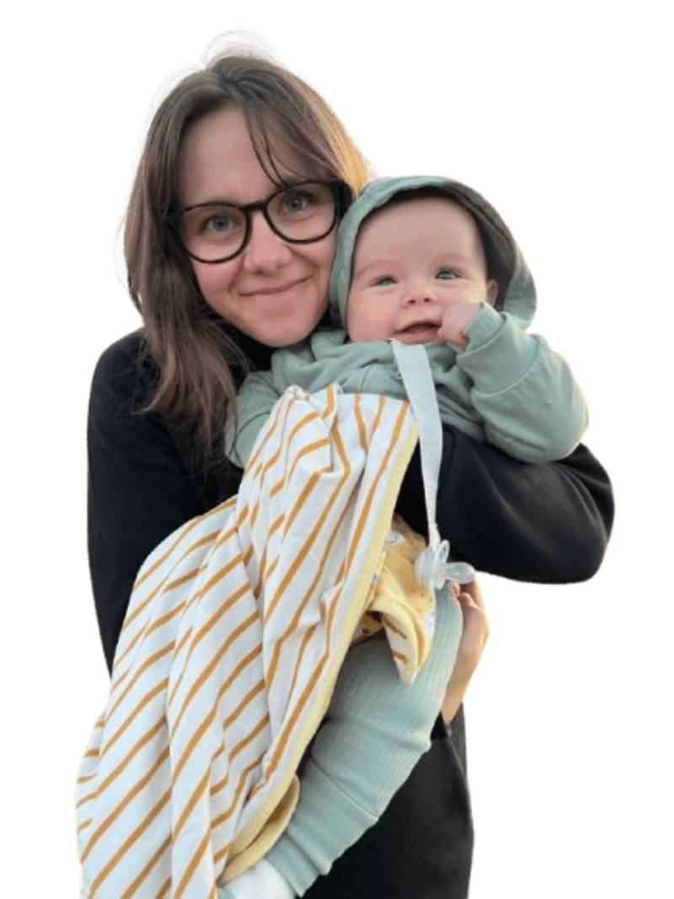

Om mig
Moa Karlsson heter jag, är 31 år gammal och bor i Hållsta/Eskilstuna tillsammans med min man Björn och våra 2 barn, Klara och Kasper. I familjen finns även jaktlabradoren Selma samt fodervärdshunden Signe som vi har tills låns och som förhoppningsvis ska bli assistanshund när hon blir stor. Jag är en riktigt hundtjej som är utbildad hundintruktör samt rehabiliteringsterapeut och har drivit både hundrastningsföretag samt hunddagis. De senaste 8 åren har jag arbetat i djuraffär. Annars är jag en mycket kreativ person som älskar att pyssla och skapa. Som hobby driver jag en egen webshop där jag skapar barn och baby produkter.
